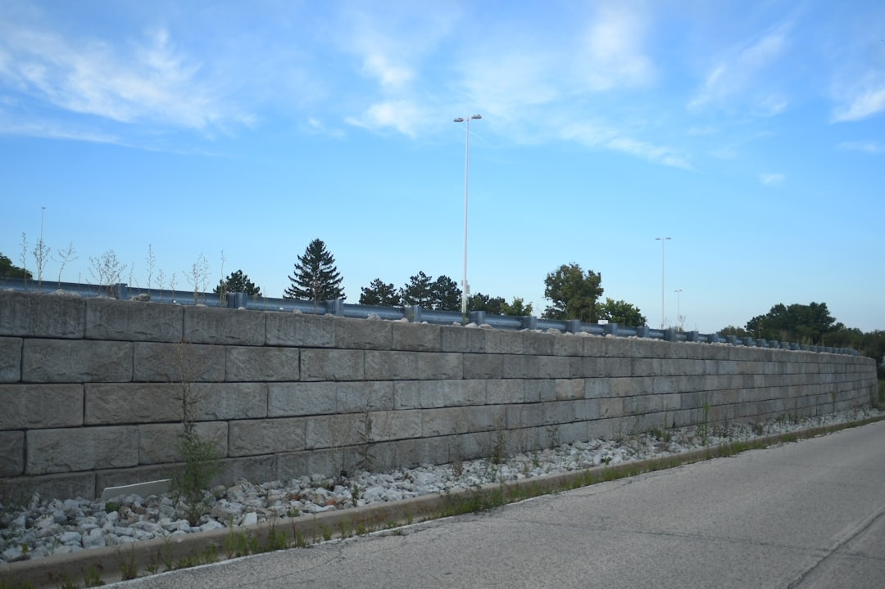

Start with the facts a wall specialist needs: wall size, site conditions, postcode and timing. The source page lists 8 provider types, including concrete sleeper, timber, block and masonry, stone and boulder, gabion, repairs, engineered and commercial work. It says requests are free to submit, carry no obligation to proceed, and can be made without an account in about 30 seconds.
For homeowners comparing retaining wall contractors, the useful starting point is a clear brief, including wall type, site access, visible condition, postcode and preferred timing.
Retaining Wall Contractors Explained
Retaining Wall Contractors Australia frames the first enquiry around wall size, site conditions, postcode and timing. Those inputs help a wall specialist judge fit before a quote conversation, especially when the listed work spans new walls, repairs, material based projects, and engineered or commercial jobs.
Prepare the brief before asking for a quote. Measure the approximate length and height if you can do so sensibly, note whether access is narrow, sloped or shared, and say whether the wall is new work, replacement or repair. If the material is undecided, say that too. A vague request invites assumptions, while a short factual brief gives each business the same starting point.
- Wall size and visible condition.
- Postcode and access notes.
- Preferred material, if known.
- Timing for the first conversation.
Who This Applies To
This guide is for Australian property owners and project managers comparing wall specialists across the locations shown on the source page. The page shows browsing for the Australian Capital Territory, New South Wales, Queensland, South Australia, Tasmania and Victoria, with Geelong and Newcastle shown as popular locations.
It also suits readers who know a wall is needed but are still choosing the right work type. A garden or boundary wall may begin as a material question, while a damaged wall starts as a repair enquiry. A larger project may need the engineered or commercial category before individual businesses are contacted. For a city focused Queensland comparison, see this Brisbane wall contractor guide.
Choosing the Right Category
Use the categories as a decision filter, not as proof that every listed provider suits every job. Concrete sleeper, timber, block and masonry, stone and boulder, and gabion options are useful when material is already part of the brief. Repair listings are a better starting point when the existing wall is the problem. Engineered and commercial listings are relevant when documentation, design input or larger project coordination may be involved.
Ask each business to confirm the category that best describes the job before discussing price. If photos are available, ask whether they are enough for an initial view or whether a site visit is needed before scope can be discussed. When two providers suggest different methods, compare what each method includes before treating one response as cheaper.
Checks Before You Shortlist
A practical shortlist compares evidence, coverage and fit. The source page describes cross checked provider listings and encourages users to read reviews, view photos, compare services and pricing, then contact providers directly. Some featured profiles refer to first party evidence of wall services and tell users to confirm coverage, availability and project requirements with the business.
Before committing time to a quote process, ask what parts of the work the provider handles, what information they need from you, and whether the job type matches their recent work. If the choice is repair or replacement, ask whether they inspect before recommending either path. If a wall may involve design documents or broader site coordination, raise that early so the provider can confirm whether the enquiry fits their work.
- Coverage: confirm the provider services the postcode and property type.
- Fit: match the enquiry to the closest listed category.
- Evidence: compare photos, service descriptions and review text.
- Next step: ask what is needed for a useful quote discussion.
Reading Reviews and Prices
The source page displays ratings and review counts for some providers, but it also directs users to contact each business for details that may change. Reviews can help create a shortlist. They cannot answer whether a specific wall type, access issue or timing requirement suits that provider.
Photos may be more useful than broad praise when they show a similar wall type. Pricing comparisons work best after the scope is aligned, because one response may include different preparation, materials or site assumptions from another. For wider renovation discipline, ASIC Moneysmart has renovating information that can help owners think about spending before committing, while the Housing Industry Association and Master Builders Australia publish building sector material that may help readers prepare better questions.
What to Send First
The source page says users can describe the job in about 30 seconds, without an account and with no obligation. Keep the first message short, but include the facts that change provider fit.
A useful enquiry includes property location, wall size, visible condition, preferred material if known, access notes, photos available and timing. If you are unsure whether the wall needs repair or replacement, say that directly. If engineered or commercial expertise may be needed, use those words so unsuitable providers can opt out early.
- Define the wall. Note the approximate wall size, visible condition, material preference and whether the job is new work, repair or replacement.
- Choose the category. Use the listed provider types to direct the enquiry toward the most relevant wall professional.
- Send the brief. Include postcode, site conditions and timing so unsuitable providers can be filtered out early.
- Compare evidence. Review photos, service descriptions, pricing information and reviews before contacting preferred businesses.
- Confirm directly. Ask each provider to confirm coverage, availability and project requirements before you decide.
| Situation | Useful category signal | Question to ask |
|---|---|---|
| New residential wall | Material category such as timber, concrete sleeper, block and masonry, stone and boulder, or gabion | Have you built this wall type recently, and what details do you need before quoting? |
| Existing wall problem | Retaining wall repairs | Do you inspect before recommending repair or replacement? |
| Larger or documented project | Engineered and commercial retaining walls | What design or project documents do you need before assessing suitability? |
Common questions
What details should I provide before asking for a quote? Provide wall size, site conditions, postcode and timing. The source page asks for those details so suitable wall professionals can assess the enquiry.
Is submitting an enquiry described as free? Yes. The source page says the request is free to submit, carries no obligation to proceed, and does not require an account.
Which wall categories are listed? The listed categories include concrete sleeper, timber, block and masonry, stone and boulder, gabion, repairs, engineered and commercial work, plus general contractor listings.
Can reviews alone decide who to hire? No. Reviews can help with shortlisting, but users are also told to compare services, photos and pricing, then contact the business directly to confirm coverage and project requirements.
This guide covers how to prepare, shortlist and compare wall professionals using the published Australian service information supplied for this page.